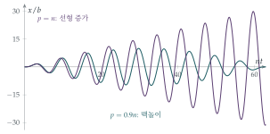

STEP II 1991, 문제 12
계속 읽기 전에 문제를 먼저 읽어 보자. 문제는 STEP Support Programme의 문제 데이터베이스에 있다: step.maths.org/questions/91-s2-q12
도입
그네 탄 아이를 딱 알맞은 순간마다 밀어 주면 작은 힘이 쌓여 그네가 크게 흔들린다. 박자가 어긋나게 밀면 별일이 일어나지 않는다. 진동하는 계에는 모두 고유진동수(natural frequency)가 있고, 바로 그 진동수로 힘을 가하면 들인 노력에 비해 엄청나게 큰 반응이 나온다. 이것이 공명(resonance)이다. 가수가 와인 잔을 깨뜨릴 수 있는 것도, 군인들이 다리를 건널 때 발을 맞추지 않는 것도, 라디오가 수천 개의 방송국 가운데 하나를 골라낼 수 있는 것도 모두 공명 때문이다.
이 문제는 탄성 끈(elastic string)의 위쪽 끝을 흔들고, 끈이 언제 팽팽한(taut) 상태를 유지하는지 묻는다. 답에는 인수 \(\frac{1}{n - p}\)가 들어 있는데, 이 값은 구동 진동수 \(p\)가 고유진동수 \(n\)에 가까워질수록 한없이 커진다. 공명 근처에서는 살짝만 흔들어도 끈이 느슨해진다(slack).
시작하기 전에
입자는 늘어난 길이(extension)가 \(c\)인 상태로 평형(equilibrium)을 이루며 매달려 있다. 끈의 탄성계수(modulus)가 \(\lambda\)이면 \(\lambda\), \(a\), \(c\), \(m\), \(g\) 사이에는 어떤 관계가 있는가? 위쪽 끝이 \(b\sin pt\)만큼, 입자가 \(x\)만큼 아래로 움직였을 때 늘어난 길이는 얼마인가?
평형 상태에서는 장력(tension)과 무게가 같으므로 \(\frac{\lambda c}{a} = mg\)이다. 위쪽 끝이 \(b\sin pt\)만큼, 입자가 \(x\)만큼 아래로 변위되면 끈의 길이는 \(x - b\sin pt\)만큼 늘어나므로, 늘어난 길이는 \(c + x - b\sin pt\)이다.
차근차근 풀기
단계 1 운동 방정식
아래쪽을 양의 방향으로 잡으면, 입자에 작용하는 힘은 무게 \(mg\)와 위쪽으로 작용하는 장력 \(\frac{\lambda}{a}(c + x - b\sin pt)\)이다. \[m\ddot x = mg - \frac{\lambda}{a}(c + x - b\sin pt) = -\frac{\lambda}{a}(x - b\sin pt),\] 여기서 \(\frac{\lambda c}{a} = mg\)를 이용하였다. \(\frac{\lambda}{ma} = \frac{g}{c} = n^2\)이므로 이 식은 \(\ddot x = -n^2(x - b\sin pt)\)가 된다.■
입자는 움직이는 점 \(b\sin pt\) 쪽으로 용수철 같은 힘을 받는다. 구동이 없다면 입자는 각진동수(angular frequency) \(n\), 즉 고유진동수로 진동할 것이다.
단계 2 방정식 풀기
방정식은 \(\ddot x + n^2x = n^2b\sin pt\)이다. \(x = C\sin pt\) 꼴의 특수해(particular solution)를 시도해 보자. 그런 다음 \(\ddot x + n^2x = 0\)의 일반해(general solution)를 더한다. 입자는 어떤 초기조건(initial conditions)을 만족하는가?
\(x = C\sin pt\)를 대입하면 \((-p^2 + n^2)C = n^2b\)이므로 \(C = \frac{n^2b}{n^2 - p^2}\)이다(\(p \neq n\)이어야 한다). 여함수(complementary function)는 \(D\cos nt + E\sin nt\)이다. 입자는 평형 위치에서 정지 상태로 출발한다. \(x(0) = 0\)에서 \(D = 0\)이고, \(\dot x(0) = 0\)에서 \(Cp + En = 0\)이므로 \(E = -\frac{nbp}{n^2 - p^2}\)이다. 이를 모두 합치면 \[x(t) = \frac{bn}{n^2 - p^2}(n\sin pt - p\sin nt). \qed\]
단계 3 팽팽함 유지하기
끈은 늘어난 길이가 양수일 때 정확히 팽팽하다. 늘어난 길이 \(c + x - b\sin pt\)를 \(t\)로 나타내어 보자.
\(x(t)\)에서 \(b\sin pt\)를 빼면 \[\begin{aligned} x - b\sin pt &= \frac{b}{n^2 - p^2}\bigl(n^2\sin pt - np\sin nt - (n^2 - p^2)\sin pt\bigr) \\ &= \frac{bp}{n^2 - p^2}(p\sin pt - n\sin nt). \end{aligned}\] 따라서 끈이 줄곧 팽팽함을 유지할 필요충분조건은 \[c + \frac{bp}{n^2 - p^2}(p\sin pt - n\sin nt) \geq 0 \qquad\text{모든 } t \geq 0.\] 에 대하여 성립하는 것이다.
\(p\sin pt - n\sin nt\)는 최대한 얼마나 작은 음수가 될 수 있는가?
\(|\sin| \leq 1\)이므로 \(p\sin pt - n\sin nt \geq -(p + n)\)이다. 따라서 늘어난 길이는 적어도 \[c - \frac{bp(n + p)}{n^2 - p^2} = c - \frac{bp}{n - p},\] 이고, 이 값은 \(pb < (n - p)c\)이면 양수이다.■
\(p\)가 \(n\)에 가까워지면 이 조건은 어떻게 되는가? \(p = 0.9n\)일 때 흔드는 진폭 \(b\)는 얼마나 작아야 하는가? \(p = 0.99n\)일 때는?
돌아보기
평형 위치에서부터 잰다. 평형 상태의 늘어난 길이 \(c\)를 이용하여 방정식에서 중력을 없앴다.
특수해와 여함수의 합. 진동수 \(p\)의 강제 응답에 진동수 \(n\)의 자유 진동을 더하고, 상수는 초기조건으로 정했다.
풀지 말고 어림하라. 늘어난 길이의 최솟값을 정확히 구하지 않았다. 사인에 대한 거친 어림만으로도 충분조건(sufficient condition)을 얻기에 충분했다.
숨은 수학
공명 극한
해에서 \(p \to n\)으로 보내 보자. 분자와 분모가 모두 0으로 수렴하는데, 극한 계산(또는 \(p\)에 대하여 미분하는 로피탈(l’Hôpital)의 정리)을 하면 \[x(t) \to \frac{b}{2}(\sin nt - nt\cos nt).\] 을 얻는다. 항 \(nt\cos nt\)는 한없이 커진다. 정확히 고유진동수로 구동하면 매번 미는 힘이 운동과 박자를 맞추어 더해지므로 진폭이 시간에 대해 선형으로 증가한다. 공명보다 조금 아래에서는 두 진동수가 박자가 맞았다 어긋났다 하면서 맥놀이(beats)가 생긴다. 진폭이 느린 진동수 \(n - p\)로 커졌다 잦아들기를 반복하는 것이다(그림 11.1.1). 거의 같은 음으로 조율된 두 기타 줄에서도 같은 맥놀이가 들린다.

감쇠와 공명 곡선
실제 계는 마찰이나 공기 저항으로 에너지를 잃고, 이 때문에 진폭의 증가가 제한된다. 감쇠(damping)가 있으면 진동수 \(p\)의 구동력에 대한 정상 상태(steady-state) 응답의 진폭은 고유진동수 근처에서 최대가 된다. 봉우리가 뾰족할수록 감쇠가 작다. 공학자들은 이를 품질 계수(quality factor) \(Q\)로 나타낸다. 대략 말하면, 계가 에너지의 대부분을 잃기 전까지 진동하는 횟수이다. 와인 잔의 \(Q\)는 수천에 이르므로, 정확히 고유진동수의 음을 지속해서 내면 잔이 깨질 수 있다. 자동차의 서스펜션은 일부러 \(Q\)를 낮게 만들어 요철을 지나도 차가 계속 튀지 않게 한다.
1831년, 맨체스터 근처의 브로턴 현수교(Broughton Suspension Bridge)를 발맞추어 행진하던 군인들의 대열이 다리를 진동시켜 결국 무너뜨렸다. 그 뒤로 군대는 다리 위에서 발을 맞추지 말라는 명령을 받게 되었다. 2000년 6월에 개통한 런던 밀레니엄 브리지(Millennium Bridge)는 사람들이 건너자마자 옆으로 흔들리기 시작했다. 보행자들이 무의식적으로 흔들림에 발걸음을 맞추어 박자에 맞게 에너지를 공급했기 때문이며, 다리는 감쇠 장치를 설치하는 2년 동안 폐쇄되었다. 1940년의 유명한 타코마 내로스 다리(Tacoma Narrows Bridge) 붕괴는 흔히 공명으로 설명되지만, 실제로는 바람의 힘이 다리 자체의 운동에 따라 달라지는 다른 현상인 공기탄성 플러터(aeroelastic flutter)였다. 이를 분석하려면 자려 진동(self-excited oscillation)과 리밋 사이클(limit cycle)의 개념이 필요하다(8.4 절).
사고 기술
주기적인 힘으로 구동되는 선형 방정식의 해는 구동 진동수의 응답에, 초기조건에 맞게 고른 고유진동수의 자유 진동을 더한 것이다.
이것이 가능한 이유는 선형성(linearity) 때문이다. 해들을 더할 수 있기 때문이다. 대학에서는 같은 원리를 여러 구동 진동수의 합에 적용하여 푸리에(Fourier) 해석, 공학의 전달 함수(transfer function), 물리학의 그린(Green) 함수로 나아간다.
더 도전하기
떨어지는 엘리베이터. STEP II 1996, 문제 11에 도전해 보자. 가속하기 시작했다가 가속을 멈추는 엘리베이터 안에서 탄성 끈에 매달린 질량에 관한 문제이다. 최종 진폭이 가속 지속 시간에 따라 어떻게 달라지는지 살펴보자.
공명 상태. 특수해 \(x = Ct\cos nt\)를 시도하여, \(x(0) = \dot x(0) = 0\)인 \(\ddot x + n^2x = n^2b\sin nt\)를 직접 풀어라. 그 결과가 위의 극한과 일치하는지 확인하여라.
맥놀이. \(n\sin pt - p\sin nt\)를 두 항의 합으로 쓸 수 있고, \(p\)가 \(n\)에 가까울 때 그중 한 항이 근사적으로 \(2n\cos\frac{(n+p)t}{2}\sin\frac{(p-n)t}{2}\)임을 보여라. 이를 이용하여 맥놀이 주기 \(\frac{2\pi}{n - p}\)를 설명하여라.
감쇠가 있는 공명. 작은 \(k > 0\)에 대하여 \(\ddot x + 2k\dot x + n^2x = F\cos pt\)의 정상 상태 진폭을 구하고, 이 진폭이 \(p^2 = n^2 - 2k^2\)일 때 최대임을 보여라.
더 읽을거리
A. P. French, Vibrations and Waves (MIT Introductory Physics Series). 강제 진동과 공명을 다룬 4장은 고전적인 설명이다.
Steven Strogatz, Sync (Penguin). 반딧불이에서 밀레니엄 브리지까지, 사물이 어떻게 박자를 맞추게 되는지를 다룬다.
Henry Petroski, To Engineer Is Human (Vintage). 역사 상자에 나온 다리들을 포함하여 공학의 실패 사례를 다룬다.